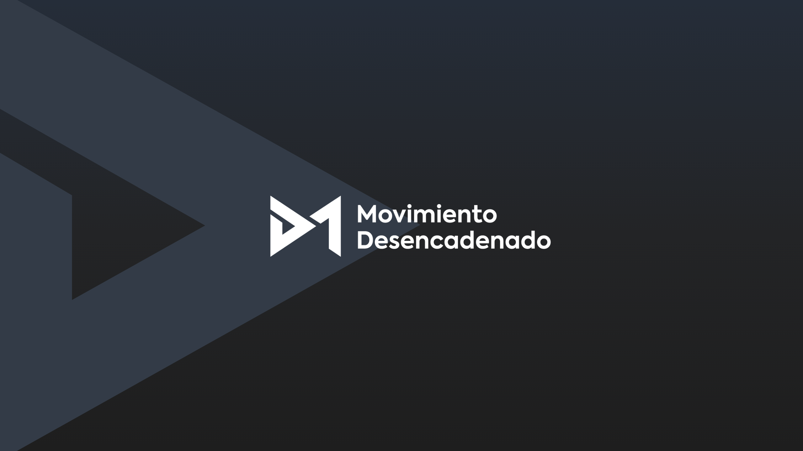

Propuesta de marca
Todo lo de esta página está medido sobre las piezas que ya publica el canal, o calculado. Estado a 10 de septiembre.
Todo lo de esta página está medido sobre las piezas que ya publica el canal, o calculado. Estado a 10 de septiembre.
Lo que cambia respecto a lo que hay hoy
El invitado va a color. Son los protagonistas. El blanco y negro queda para material de archivo.
Fuera el púrpura de las piezas. Sobre la superficie oscura da 2,15:1: no es legible. Se queda dentro del logo.
Un solo acento coral para las dos superficies, en vez de dos rojos distintos.
El gesto de fondo es la flecha del isotipo, monocroma. Antes eran bandas diagonales en coral.
Superficies
Oscura
Degradado vertical: el azul vive en el tercio de arriba y muere antes de la mitad. Es lo que la separa de un negro cualquiera.
#252D39 → #232426 → #1E1E1E
Clara
Plana. Alterna con la oscura para dar ritmo.
#E9E9E7
Acento
La ración: entre el 3 y el 9 % del área pintada, nunca más del 10 %. Es la misma dosis que ya tienen vuestras piezas (3,8 % la portada de episodio, 9,8 % la miniatura); lo que se retira es el púrpura de superficie, que llegaba al 10,4 %.
Tipografía · Axiforma
Caja mixta en titulares: las mayúsculas son lenguaje Polestar.
Miniatura de YouTube
episodio 63

"Salí del dolor
crónico yo sola"
Oscura.
episodio 63
"Salí del dolor
crónico yo sola"
Clara.
Mismo formato que el del canal, medido: la cita siempre en dos líneas alineada a la derecha y con el tamaño ajustado para rozar el margen; el número de episodio en contorno, al ras del borde inferior y por encima del invitado; la flecha con la base a la altura completa y la punta hacia el centro. Las comillas son de marca: dos barras al ángulo de la flecha.
Cabeceras

YouTube · 2560 × 1440. El logotipo va a 1200 × 400, centrado dentro de la franja segura de 1546 × 423, que es lo único que se ve en móvil y escritorio. En una sola tinta: a color, ninguna de las dos mitades del logo llega a contraste sobre ninguna superficie.


Instagram · perfil. Solo el isotipo, al 89 % del diámetro, sobre fondo limpio. El logotipo con palabras no entra: a 32 px en una lista de comentarios sería una mancha.
CTAs
Un solo primario por pantalla. Sin esquinas redondeadas: el isotipo es todo aristas. El botón coral lleva tinta oscura; con blanco encima no llega a contraste.